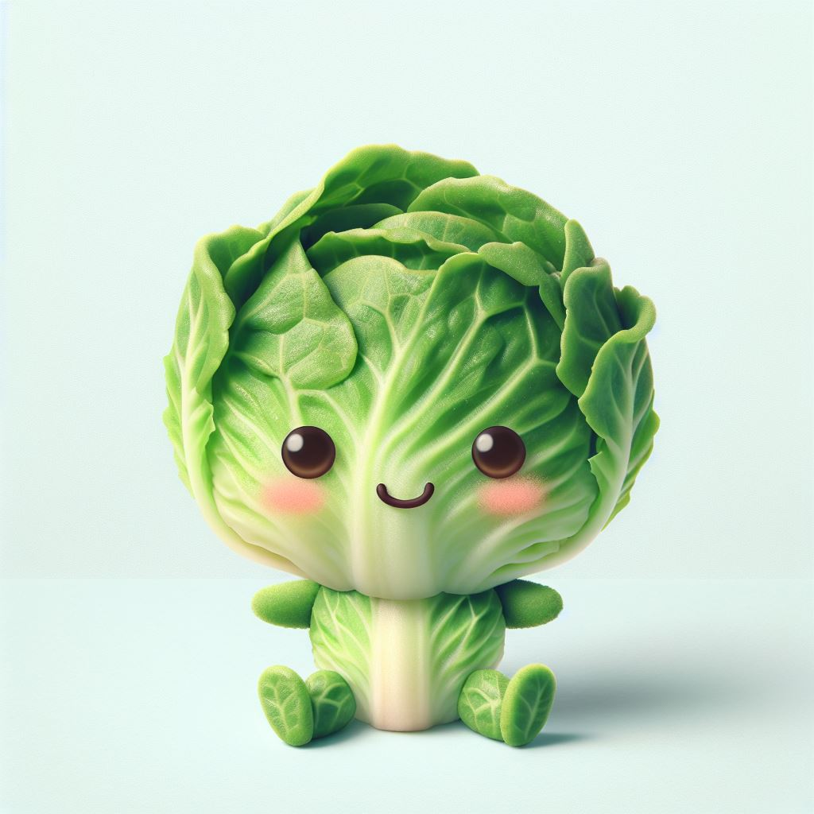

Infancia
Lettuce nació en la fresca tierra de un pequeño huerto orgánico. Desde el primer día, sus hojas verdes y brillantes destacaban entre las demás. En sus primeros días, Lettuce se enfrentó a las inclemencias del clima, aprendiendo a balancear su crecimiento entre el sol y la sombra. Fue un reto, pero pronto se convirtió en la lechuga más vibrante del lugar. Sus primeros amigos fueron un grupo de zanahorias, quienes la apodaron “La Reina del Rocío”.